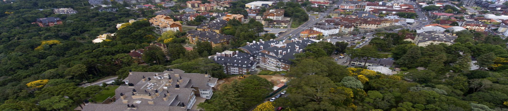
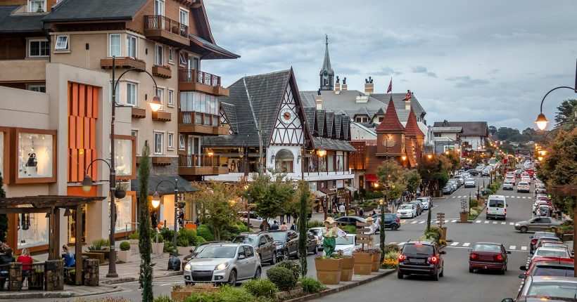

GRAMADO
Rio Grande do Sul

Rio Grande do Sul
Gramado é uma cidade com uma estância de montanha situada no estado mais a sul do Brasil, Rio Grande do Sul. Influenciada pelos colonos alemães do século XIX, a cidade possui um toque bávaro com chalés alpinos, chocolateiros e lojas de artesanato.
Gramado é também conhecida pelas suas exibições de luzes de Natal e pelas hortênsias em flor na primavera. O Lago Negro disponibiliza alugueres de barcos e caminhadas na floresta, enquanto as montanhas da Serra Gaúcha possuem trilhos de caminhada e de alpinismo.
Se o foco da sua viagem é aproveitar a cidade sem a necessidade de participar de festividades como Natal e Páscoa, por exemplo, os melhores meses para viajar são fevereiro e março (época mais quente) ou maio e setembro (períodos com temperaturas mais amenas).
Ande de pedalinho no Lago Negro, visite o Mini Mundo, a Cascata do Caracol, a Fábrica de Chocolates Prawer. Faça um passeio de agroturismo. Escolha sua cuca fresquinha nos Fornos de Gramado da Praça das Etnias.

A Rua Coberta é onde o ritmo de Gramado pulsa. Cheia de restaurantes e lojas, é o lugar perfeito para quem procura experimentar a deliciosa comida local ou simplesmente apreciar o ambiente animado e acolhedor. Logo ali perto, está a Igreja de São Pedro com sua arquitetura impressionante que ilumina a noite de Gramado.
Em seguida, explore as maravilhas naturais que Gramado tem a oferecer. Começando pelo Lago Negro, um lugar tranquilo para passeios de pedalinho enquanto admira os pinheiros importados diretamente da Floresta Negra alemã. Já o Parque do Caracol, na cidade vizinha de Canela, oferece uma surpreendente cascata de 131 metros de altura, um espetáculo visual imperdível..
PARAÍSO DO CHOCOLATE - Para os chocólatras, Gramado é um verdadeiro paraíso. Visite a Fábrica de Chocolates Prawer para mergulhar no mundo apaixonante dos chocolates artesanais. Além disso, Gramado é conhecida por eventos como o Festival de Cinema e o Natal Luz, este último repleto de apresentações incríveis e decorações mágicas que fazem a cidade brilhar.
FESTIVAL DE CINEMA - Criado em 1973, o Festival do Cinema Brasileiro e Latino de Gramado é considerado um dos eventos mais tradicionais de cinema no Brasil. Realizado durante todo o mês de agosto no Palácio dos Festivais, o evento conta com um tapete vermelho na Rua Coberta durante sua cerimônia de abertura, onde os artistas e diretores marcam presença. O evento é aberto ao público e possui opções para todas as pessoas, que podem assistir a curtas e longas metragens nacionais e internacionais.